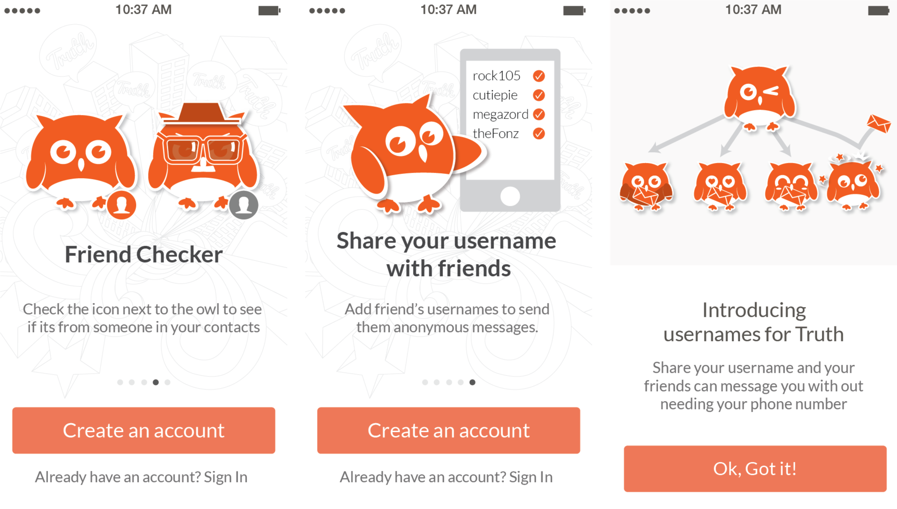

Truth: iOS app
2014 - 2015
"Truth" is an anonymous messaging platform that allows users to anonymously message directly to their phone contacts.
The goal was to create an network for people to speak their minds to people they knew. I joined the start-up "Truth"
early in February 2014 as the designer of the team. I was in charge of designing the app from the very start and to work
along side the developers.
Most of the work was done on paper and Illustrator to create all app assets and plan out UX flow of the app. I pushed
for to try out new ways to onboard users, gesture controls, and other app improvements.
back to the top
back to portfolio
01. App
The primary focus for our team was the app itself. It was the way that our users would interact with each other. It was designed based on iOS 7 app styling and other common chat/messenger apps around the time.
The Truth app was split into 3 main sections.
1. The conversation feed screen where you would be able to see the lastest messages from other users.
2. The conversation detail screen which would focus in on a single chat with one other user.
3. The compose message screen, where you could select one of your contacts to send a message.
This would allow users to the basic functions to receive and send messages as well as manage multiple chat conversations.
Althought simple, we spend some time with a selection of variations of these primary screens to fine tune what was best for both accessiblity and understanding. The goal was to make the app as simple and easy to understand as possible.
A key element we wanted to highlight as early as the onboarding is how Truth worked. The idea was that you would know if the person you were chatting with was someone in your contact list, there for more likely to be a person you might know.
Over time we focused on adding more ways for the user to focus on starting and having conversations with the people that they might know. Highlighting the conversations and users that were in their contacts.
02. Branding
A lot of thought went into how we wanted to present our app and brand to our users. We wanted to keep it a fun and exciting app. Our choice of bright bold orange and a cartoon owl mascot help build this feeling of a simple and easy app.
Some iterations on differnt explorations of app icons.
It was a lot of fun coming up with all different costumes and looks for the owl. The owl served as a defacto profile image and was unique for each of the conversation the user was in. In place of the real user name, the name and description of the owl defined the name of the conversation.
03. Building a startup
Truth was created by the 3 of us while we were attending the Startup incubator "FounderFuel" in Monreal, QC. We were there for the winter 2014 cohort. We spend most of the time building the app, attending talks and sessions, getting feedback from the mentors, and preping for presentations.
The most intense parts would probably be the investor pitches and working on presentations. Our job was always to sell the future and potential of our product and ideas.
I made all of the presentation material, which included updated data and numbers on how and where our app was growing.
Overall it was a great experience, and I'm glad to have been there for the ride. Over time, Apple changed some of the app store rules on how annoymous messaging worked and quickly defeated the novelty of our app.